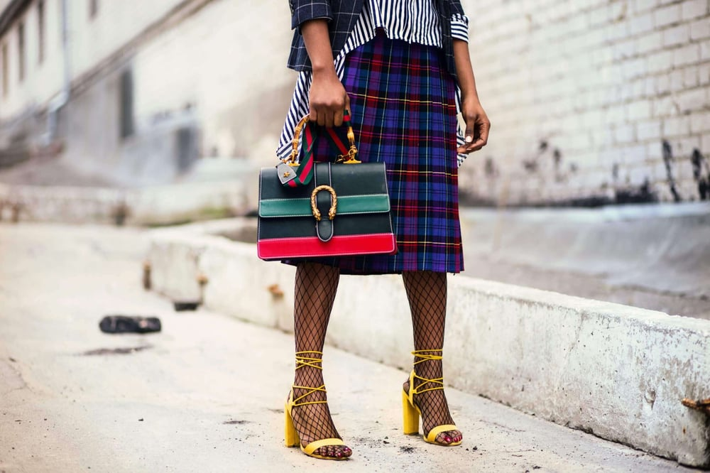

FASHION HUB
Indias Most Loved Platform
Home |
About |
Our Products |
contact us

You’ve only pretended to know what organza is. When you’re shopping for yourself, you
know what you like but you don’t know how to describe it. And ninety-nine percent of
the clothing descriptions in your first draft are just “jeans.” I get it. Clothing description is
something I have to actively choose to create, too. It’s not an aspect of character design
that bubbles up naturally from the depths of my creative soul. And as a reader, nothing
bores me like an entire paragraph of detailed clothing description.
But I’ve also noticed that artful clothing description does make a character, a setting, and
even a moment more engaging. It’s all in the craft.It’s good that you’re here to learn how
to describe clothing in writing, because it’s a powerful tool. What your character wears
reveals where they come from, how they rank in society, how they want to be perceived,
and even how they feel about themselves.